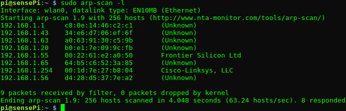
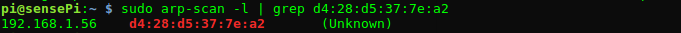
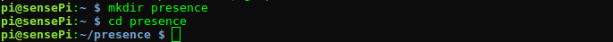
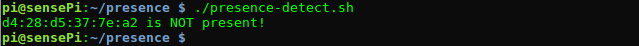
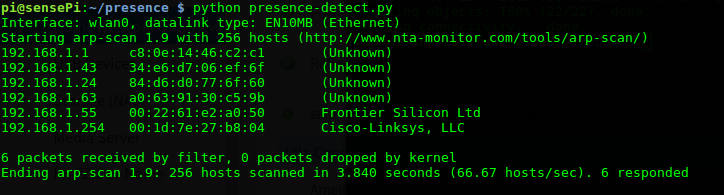
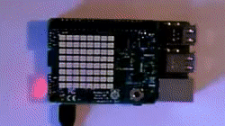
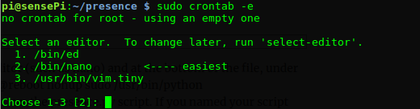
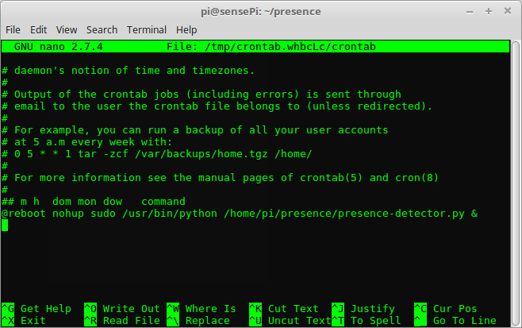

WiFi · MAC Address · ARP Scan · CronTab
In this lab you will use a WiFi local network and a Raspberry Pi/SenseHAT to build a device presence detector. You will scan the WiFi network for connected devices and identify them using their MAC address, the unique identifiers that devices use when communicating in a WiFi network. An application of this is to check who is home/in the office/lab (and not home) by checking if a person's smartphone has connected to the WiFi.
arp-scan is a fast ARP packet scanner that can find all active IPv4 devices on a network. Devices cannot hide from ARP packets like they can hide from Ping and it should detect all devices including those with firewalls.
To install arp-scan, connect to your RPi 3 in your preferred manner (e.g. headless or screen-based)
Open a terminal window on the Raspberry Pi and enter the following command:
sudo apt-get update
sudo apt-get install arp-scanOnce installed, check that it's working correctly by entering the command on the Raspberry Pi: sudo arp-scan -l. This will list all devices on your local network that responded . You should see a list of devices and corresponding IP and MAC addresses on your local network. It may take a moment to load if you are on a large network:

ARP-Scan lists all devices (if any) connected your local network at the time the scan was executed. By scanning the local network for certain devices’ MAC addresses, we can detect their 'presence' on the network. Furthermore, if connected by WiFi, we can deduce that the physical device itself is within the range of the WiFi access point (e.g. at home).
There are various ways of finding a particular device MAC address and a quick internet search will soon let you know how to find the MAC address for the WiFi interface on your Smartphone.
Find and record the MAC address of your smartphones Wifi interface (or if you're not using a Smarthone, any other device on the Wifi Network for now)
Check for the presence of the device by doing a 'grep' on the device list returned by apr-scan:
sudo arp-scan -l | grep YOUR_DEVICE_MAC
If your device was found, the command will output its address info. If nothing appears, make sure that it’s connected to the same local WiFi network as your RPi. Smart devices are fairly energy efficient so you may also need to 'wake up' your device, as it may drop the WiFi connection if left idle for too long.
Now that we have a mechanism to detect known devices on the local network, we can write a short python program to get the RPi/SenseHAT to indicate the presence/absence of a device.
Using arp-scan, you will now write a script that:
Put simply, the progran will find the list of known devices that are connected to the network.
presence:
In this directory, create a new file in called presence-detect.sh and enter the following code:
#! /bin/bash
# presence-detect.sh
# searches for the MAC address of known devices
# do arp_scan to get connected mac addresses
connectedDevices=$(sudo arp-scan -l)
knownDevices=("d4:28:d5:37:7e:a2")
for device in "${knownDevices[@]}"
do
if [[ "$connectedDevices" = *"$device"* ]]; then
echo "$device is present!"
else
echo "$device is NOT present!"
fi
donechmod +x presence-detect.sh
The script gets the result of arp-scan and assigns it to connectedDevices. It then searches connectedDevices for each MAC addresses contained in the knownDevices array (the above script only contains my phones MAC address).
The script should return indicating that the device was not detected (otherwise I want my phone back!).
knownDevices list that you can connect/disconnect easily. Perhaps add in your smartphones address.knownDevices=("d4:28:d5:37:7e:a2" "xx:xx:xx:xx:xx:xx")Now run the script again. Make sure you get a result that has both outcomes (present and not present).
In order to access easily higher order functions on the RPi such as SenseHAT and messaging protocols, we'll now switch to using Python, a good general purpose programming library that's already installed on the RPi,
We can call the arp-scan program from a Python program using the subprocess library.
presence directory you created earlier, create a new file called presence-detector.py with the following content:#!/usr/bin/env python
#coding=utf-8
import subprocess
def arp_scan():
output = subprocess.check_output("sudo arp-scan -l", shell=True)
print output
arp_scan()python presence-detector.py on the command prompt. You should see the arp-scan output printed on the console similar to the following:
Using this program we can now get at the MAC address list programatically.
names) and corresponding MAC addresses (macs).
Notice the order of the names and devices correlate(i.e. Frank's device MAC address is "d4:28:d5:37:7e:a2"). As before, you should add a name and device that is present on the local network.#!/usr/bin/env python
#coding=utf-8
import subprocess
#Names of device owners
names = ["Frank","Someone Else"]
# MAC addresses of devices
macs = ["d4:28:d5:37:7e:a2","xx:xx:xx:xx:xx:xx"]
def arp_scan():
output = subprocess.check_output("sudo arp-scan -l", shell=True)
for i in range(len(names)):
if macs[i] in output:
print(names[i] + "'s device is present")
else:
print(names[i] + "'s device is NOT present")
arp_scan()Next we'll use the SenseHat to output the results.
In this section you will ouput the presence detection result using SenseHAT. The SenseHAT can be controlled using the SenseHat Python module.
sudo apt-get update
sudo apt-get install sense-hat
sudo rebootresult to the 8x8 LED display. Update your program by adding the following import statement at the top of the python program:from sense_hat import SenseHat
sense = SenseHat()We will use two arrays to keep track of the names and corresponding device MAC addresses. Add the following array declarations to your program **just before the arp-scan() function.
arp_scan() Python function to iterate through the names array and check the arp-scan for the corresponding MAC address. Replace the arp_scan() with the following code:def arp_scan():
output = subprocess.check_output("sudo arp-scan -l", shell=True)
for i in range(len(names)):
result = names[i]
if macs[i] in output:
result=result+" is home"
else:
result=result+" is not home"
print(result)
sense.show_message(result)Now your program will, for each name:
output for the MAC address of his/her device.result to the console and show the result on the SenseHAT 8x8 LED. Run the program as before and you should see something similar to the following:

At the moment, you have to run your presence detection script manually on the RPi. Ideally, your script would run automatically at a set interval, perhaps every minute.
Add an endless loop in the program that waits of 60 seconds after every successful call to the apr-scan() function. You can use the sleep() function in the time python package to do this.
presence-detector.py, add the following import statement at the top of the file:from time import sleeparp_scan() function in an endless loop(while True:) and add code to suspend execution for 60 seconds(sleep(60)) on each iteration:while True:
arp_scan()
sleep(60)Usually, when perfoming any input/output or network connections with programming, it is a good idea to assume that at some stage the connection will fail or that the file you are trying to use might become unavailable. You can think of this as an "exceptional" event - you're not expecting it but it might happen. Also, if we are running a device remotely and will not be attending, it may be a good idea to start logging information if an error or excpetional event does occur so that you can debug it.
In Python, error handling at run time in done through the use of exceptions that are caught in try blocks and handled in except blocks. We can then using logging to save details of the error for debugging later.
precence-detector.py programimport logging
logging.basicConfig(filename='presence-detector.log',level=logging.INFO, format='%(asctime)s - %(message)s')
logging.info('Starting presencenan detector')Currently, in our presence-detector.py program, if an error occurs in the arp-scan() function the program will terminate.
def arp_scan():
try:
output = subprocess.check_output("sudo arp-scan -l", shell=True)
for i in range(len(names)):
result = names[i]
if macs[i] in output:
result=result+" is home"
else:
result=result+" is not home"
print(result)
sense.show_message(result)
except Exception as e:
logging.error(e)Now run your program as before. It should work exactly as before but now you will have a log file in the same directory as your script. Check it's contents and you should see similar to the following:
2018-10-16 09:09:11,225 - Starting presence detectorcron is a utility that allows tasks to be automatically run in the background at regular intervals. The Crontab (CRON TABle) is a file which contains the schedule of cron entries to be run and at specified times. The crontab File location varies by operating system however you can easily access it on the RPi using the crontab utility program.
In a terminal window, enter crontab -e at the prompt:

Follow the instructions and select your favourite editor (default is nano). At the end of the file, add @reboot nohup sudo /usr/bin/python /home/pi/presence/presence-detector.py &:

Save and exit the Crontab and reboot the RPi by typing sudo reboot at the command prompt. The presence detector should now start in the background on every reboot of the RPi.
devices.dat and read the file when the program starts).